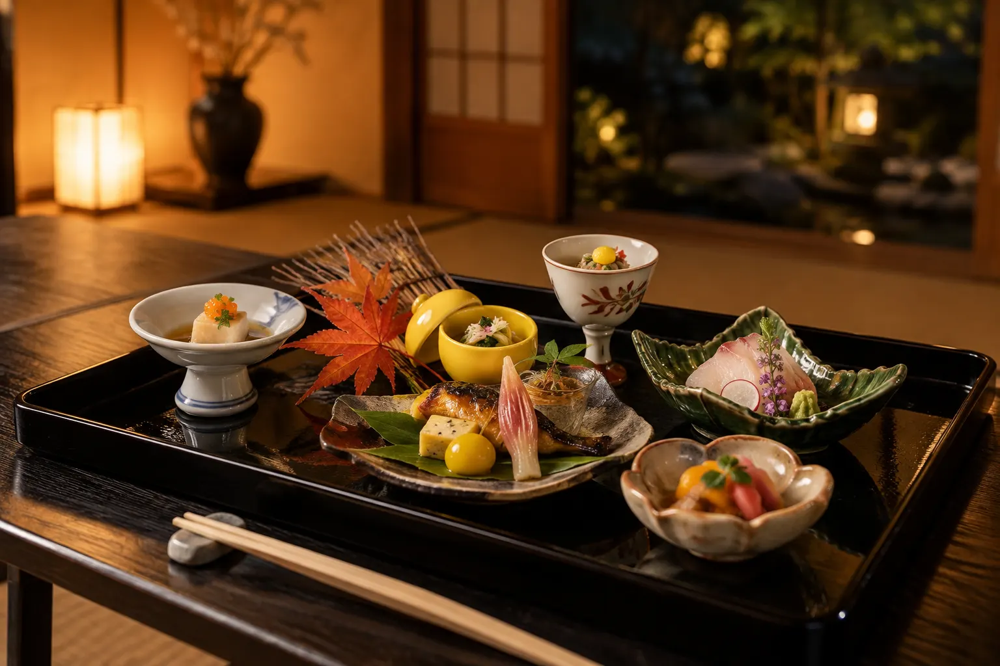
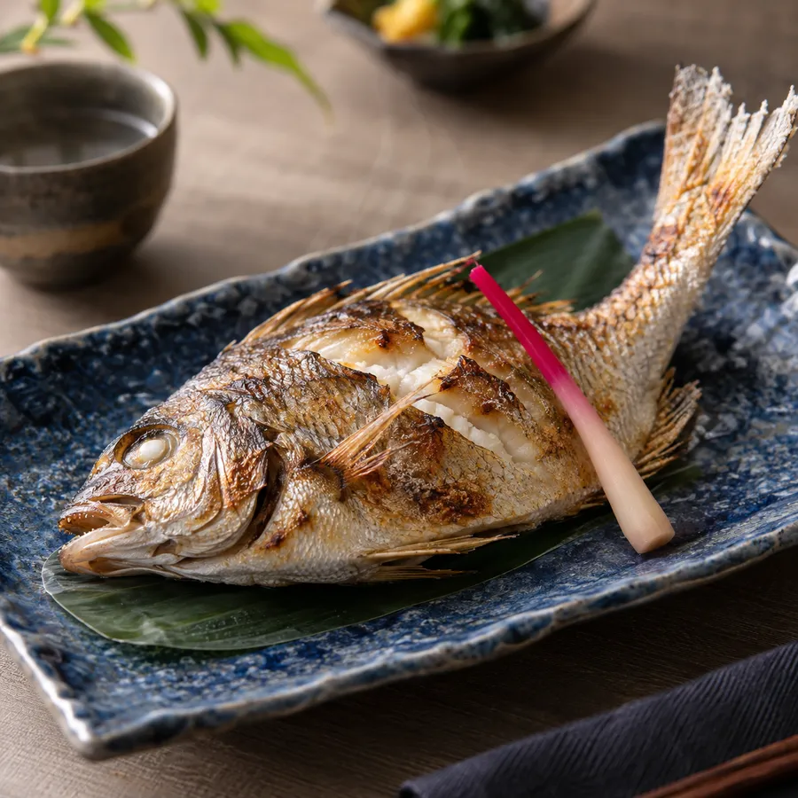
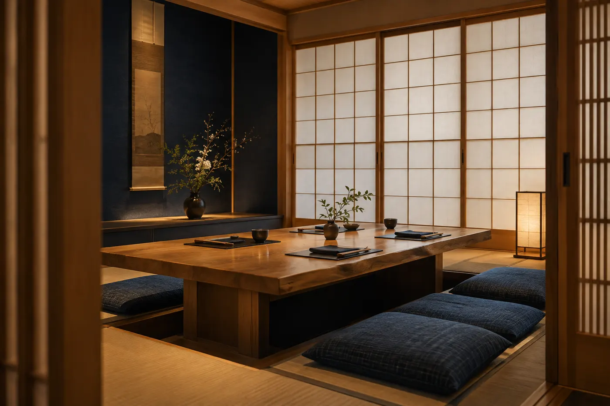
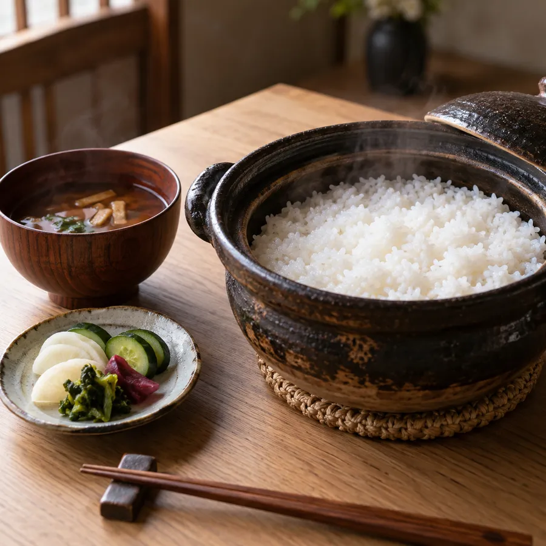

季節を、ひと皿ずつ灯す。
こだわり
筍、鱧、松茸、聖護院かぶら。京都には、季節の移ろいを映す食材があります。灯心では、それらを出汁と焼き物、炊き合わせの技法で、一皿ずつ丁寧に仕立てます。
ご家族のお祝い、法事のお席、大切なお客さまのおもてなしに。お料理の量やアレルギーのご相談も承ります。
料理長

お品書き
価格は税込・お一人様。個室料はいただいておりません。
店内
掘りごたつの個室を5室と、最大16名様の広間をご用意しています。


ご案内